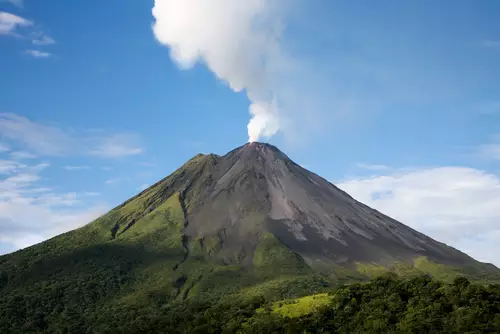
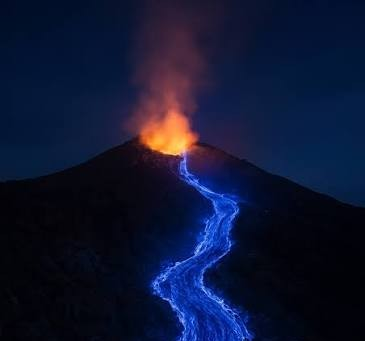
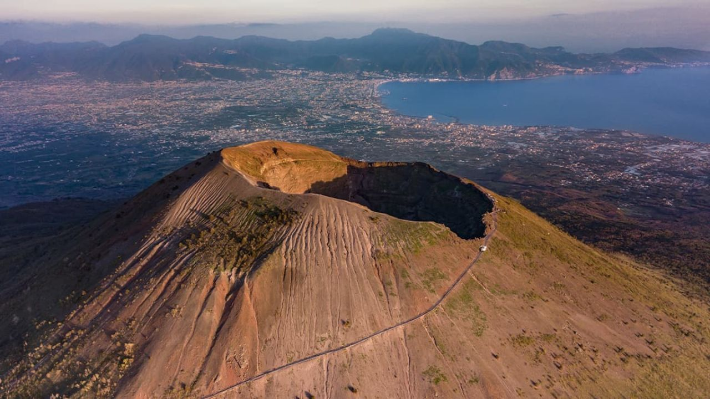
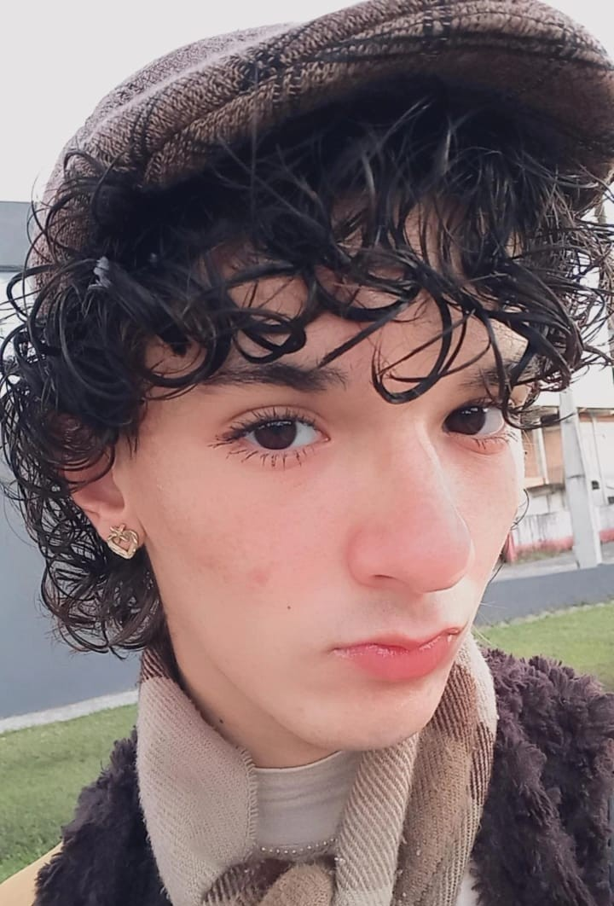
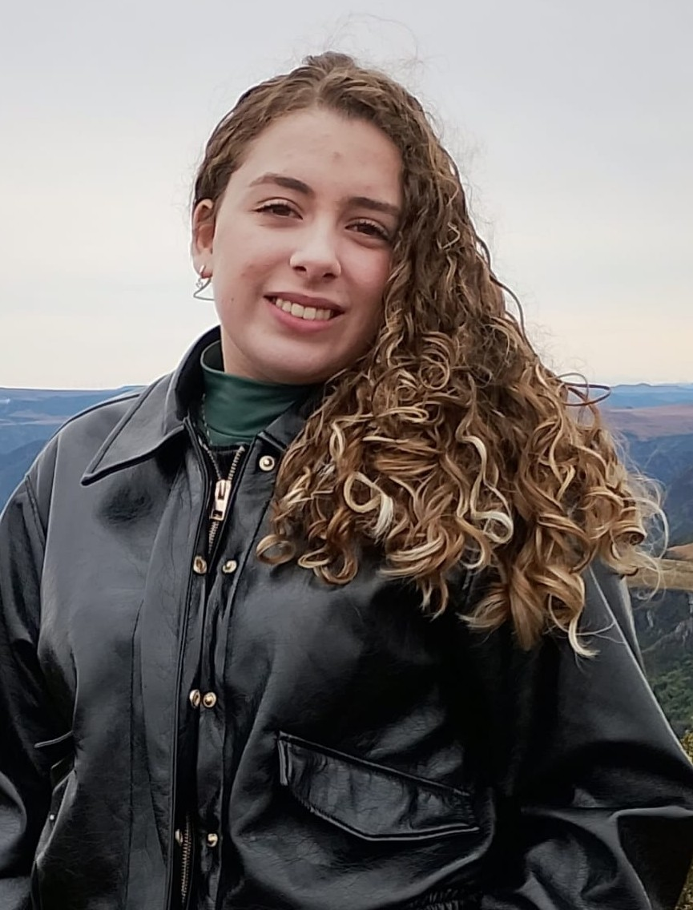
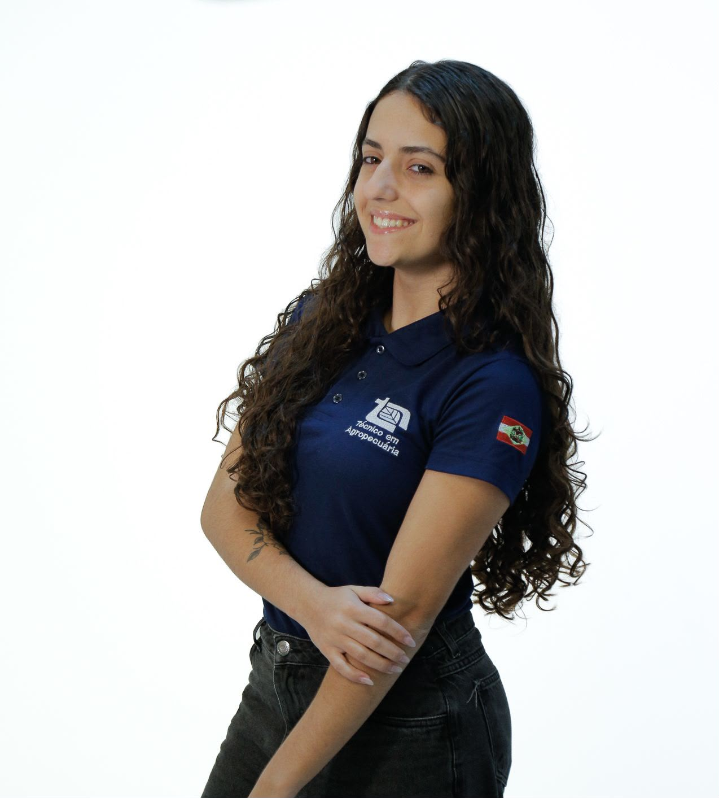
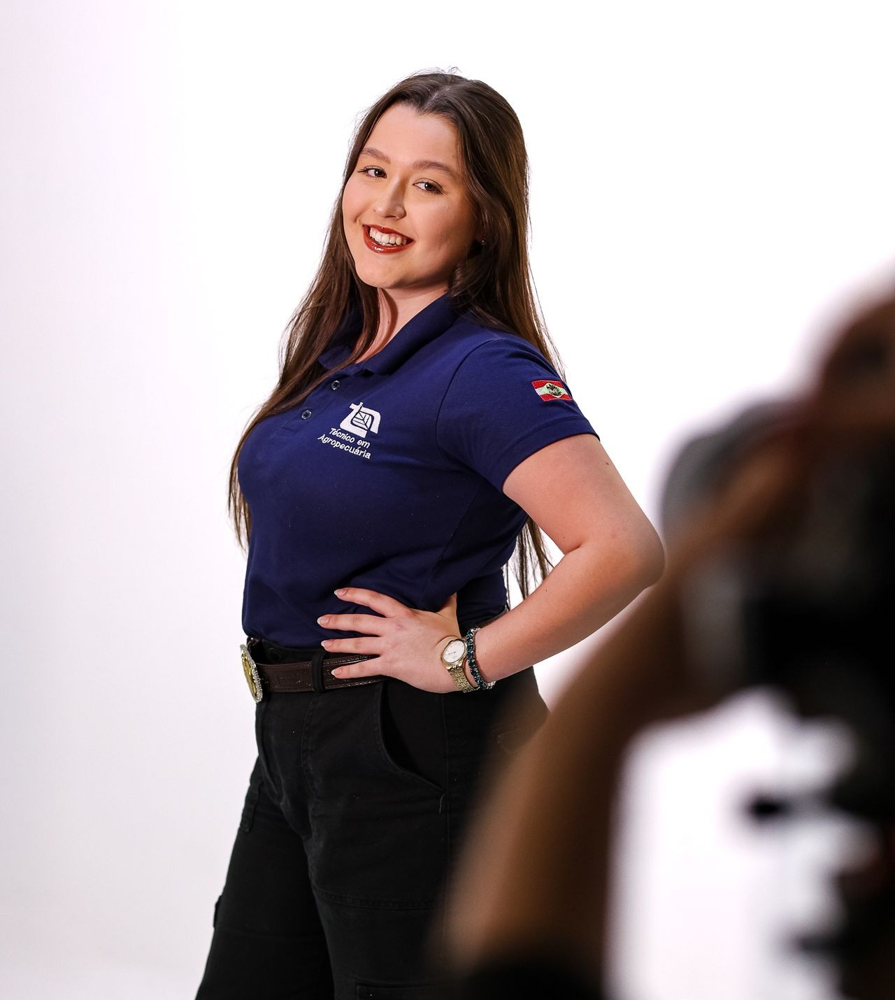
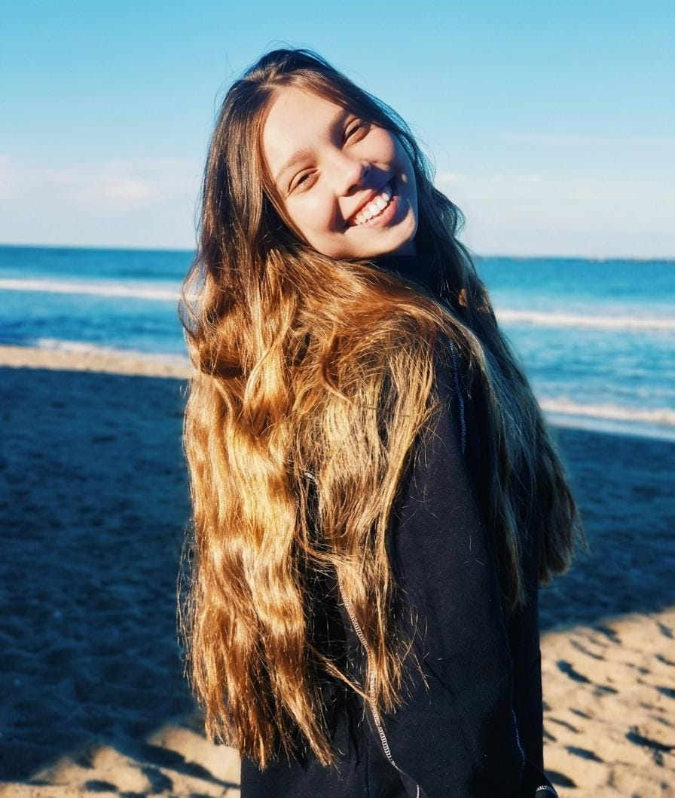
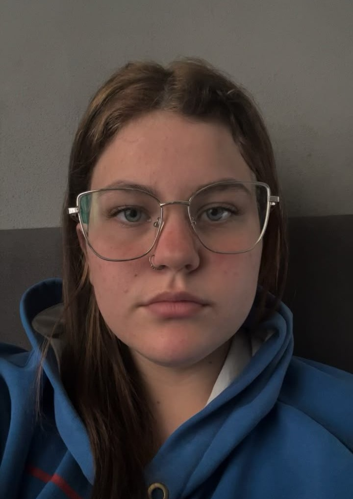

Sob a Crosta: o Mundo dos Vulcões
Sob a Crosta: o Mundo dos Vulcões é um projeto desenvolvido para o Painel de Integração da SEPE, com o objetivo de explorar o fascinante universo dos vulcões de uma maneira interativa, interdisciplinar e acessível.

Os vulcões são fenômenos naturais que despertam curiosidade e admiração, mas também podem provocar grandes transformações no ambiente e afetar a vida de milhares de pessoas. Por isso, nosso projeto busca compreender não apenas a beleza e a grandiosidade desses fenômenos, mas também seus impactos, seu funcionamento e sua importância para o planeta.
Por meio deste site, reunimos conhecimentos de Geografia, Química e Desenvolvimento Web para apresentar diferentes aspectos do mundo vulcânico. Aqui, você poderá conhecer a história dos vulcões, entender como eles se formam, descobrir onde estão localizados, conhecer alguns dos vulcões mais famosos do mundo e compreender como acontecem as erupções.

Também abordamos os processos físicos e químicos envolvidos na atividade vulcânica, seus impactos ao longo da história e algumas curiosidades que ajudam a mostrar o quanto esses fenômenos são complexos e impressionantes.

Como Surgiu a Ideia
Nosso convite é simples: olhar além da erupção e descobrir o que existe sob a crosta.
Tudo começou com uma pergunta: sobre o que poderíamos falar que fosse interessante, relevante e capaz de reunir diferentes áreas do conhecimento? Para o Painel de Integração da SEPE, queríamos desenvolver um projeto que despertasse a curiosidade das pessoas e fosse além de uma simples apresentação. Durante a busca por ideias, chegamos a um fenômeno muito conhecido, mas que ainda guarda muitos mistérios: os vulcões. É comum encontrar vulcões em feiras de ciências, principalmente por causa das famosas simulações de erupção. Porém, percebemos que havia muito mais para descobrir. O que causa uma erupção? Como os vulcões se formam? Por que existem regiões com tantos vulcões? Quais impactos eles podem causar?

Decidimos desenvolver um site reunindo informações sobre a história, formação, localização, características, erupções, impactos e curiosidades sobre os vulcões. Ao mesmo tempo, buscamos relacionar conhecimentos de Geografia, Química e Desenvolvimento Web, mostrando como diferentes áreas podem trabalhar juntas para compreender um mesmo fenômeno. Para tornar o projeto ainda mais dinâmico, também planejamos construir uma maquete de vulcão com uma simulação de erupção, aproximando o conteúdo estudado de uma experiência prática. Contamos com a colaboração dos professores Paulo, de Geografia; Kennedy, de Desenvolvimento Web; e Renata, de Química, que contribuem com seus conhecimentos para a construção do projeto. Assim, o que começou como uma busca por uma ideia para a SEPE se transformou em uma oportunidade de pesquisar, criar e compartilhar conhecimento sobre um dos fenômenos naturais mais impressionantes do nosso planeta.
Membros do Projeto
-

Julio
1INFO2
-

Isabella
1INFO2
-
Eduardo
3AGRO2
-

Kauane
3AGRO2
-

Diva
3AGRO2
-

Rafaella
1QUIM1
-

Julia
1QUIM1